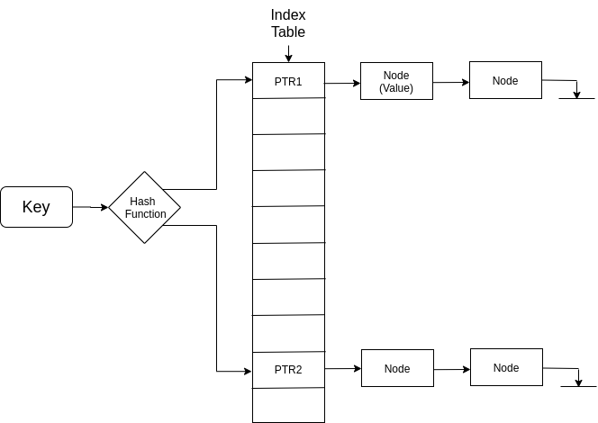
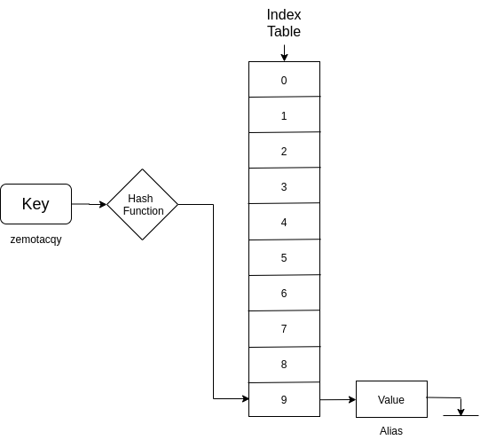

Hash Tables are the most revered data structures for us programmers. Afterall, it contains all the desired qualities of an ideal data structure. Let's analyze the time complexities:
So why do we study Trees, Graphs, Arrays, Strings. Because all that glitters is not gold. Hash Tables may seem tempting at first but have problems of their own. This writeup deals with a detailed analysis of Hash Tables. We do so by implementing a Hash Table of our own, in a language which has its own set of complex concepts - C. Let's get started.
Hash Tables is container based data structure. Its main components are Index Table, Hash Function, Key Value Pairs and Linked List. The most basic use case of a Hash Table is: Given a key value pair, it can easily be inserted into the hash table and when it comes to fetching a particular element corresponding to a particular key, it can do so in an average of O(1) time complexity.

We provide a key, value pair to be inserted to the Hash Table. This key is passed through a hash function which maps it to a particular index in the Index Table. It may be possible that multiple keys map to the same index. So, We need a way to store all these elements corresponding to that particular index. Here, Linked List comes into picture. Without the need of contiguous memory allocation, it chains together various elements in the form of a Linked List.
For a hash table to store data elements in a fashion such that it facilitates O(1) operations, we need to keep a few things in mind.
a1, a2, a3... and the hash function treats the last character as the index. In such cases, b1 -> a1, a2 -> b2 and so on and so forth.0-4 and 6-99.
int HashFunction(int key) {
return 5; // Assuming 5 lies within the index range.
}
For the purpose of this writeup, we are going to consider a basic Hash Table. Following are the assumptions:
Suppose we want to enter a key value pair in our hash table:

A very basic Hash Function:
uint32_t HashFunction(char* key, uint32_t key_size) {
uint32_t sum = 0;
for(uint32_t i=0; i<key_size; i++) {
sum = (sum + (uint32_t)key[i]) % INDEX_TABLE_SIZE;
}
return sum;
}
After passing HashFunction("zemotacqy", 8) the value returned is 9.
This indicates, Our hash table will store the key-value pair in the 9th Linked List. And the heads of all our Linked Lists are stored in index Table. That is the reason, why this data structure is most important. Failure to point to an index in Index Table will drastically increase the time complexity of searching and insertion operations.
So, now we have the index in which we need to push our value into. We prepare a node which contains both key as well as value and push it to the beginning of the Linked List(Why beginning? you can insert it anywhere in the linked list, after all we will be using linear searching in this linked list, so it doesn't matter).
Why push both key as well as value in the linked list? Recall that agreed upon many to one mapping. We can insert two keys(suppose zemotacqy and shinchan) which map to the same value - Alias. So while we are searching for the key in our linked list, we would require key so as to match if what we are searching for has the same key as well as value. Well, that's the result, you gotta store it somewhere.
Pretty neat? Let's get our hands dirty with some code :\
Earlier, I had planned on restricting the data types to only char* and int. I then converted the whole code into type generic data structures. This provides more flexibility as in we can now store <char*, char*> or <int, char> or <char**, char>. This comes with an overhead of void pointers, while using this particular data strucutre as a library.
For those bravehearts who wish to proceed further, void pointers welcome you all !!
Directory Structure
├── hashtable.c
├── hashtable.h
├── program.c (Our Driver Program)
├── utils.c
└── utils.h
Parameterization: For the purpose of this writeup we are focussing on some performance parameters:
Let's quickly define some structs(C doesn't have classes :P):
Before going into the crux, lets take a look at the driver function.
Type generic code results in some ugly piece of code, like using void* and size of block.
A quick aside on void*: In high level programming languages we just need to specify the variable and not the type. Under the hood these all are converted to a common baseline abstract data type and passed further. In C, when we specify int* x = 7;, we tell the compiler hey, x is a pointer to integer([0x00100] -> 7) which occupies 4 bytes.
0x001000 0x001001 0x001002 0x001003
00000000 00000000 00000000 00000111This is how it is stored in memory. But void* is the common baseline abstract data type, which has no information about how many blocks this variable occupies. So we always need to specify the starting address of the block and the number of bytes it should read without entering illegal memory space.
The whole driver function is divided into 3 parts:
Here's the Hash Function:
uint32_t HashFunction(HashTable* _hashtable, Key* key) {
uint64_t sum = 0;
const uint32_t R = 13;
for(uint32_t i=0; i < key->size; i++) {
sum = ( R * sum + (uint32_t)(*(char*)&key->data[i]) ) % MAX_INDEX_TABLE_SIZE;
}
return (sum % MAX_INDEX_TABLE_SIZE);
}
As we can see, there is R which is a small prime number. This number adds more randomness to the hash function.
Here's the Hash Table public methods:
Let's take a quick look at the results at this stage:
Fixed Initial Index Table Size = 1000, Note that, for the purpose of this table I have commented the growTable logic(explained later).
| No. of Nodes/Insertions | Average Fetch Time (in ns) | Collision(%) |
|---|---|---|
| 100 | 1.20 | 1 |
| 500 | 2.90 | 21.6 |
| 1000 | 4.20 | 36.4 |
| 10000 | 5.64 | 90 |
| 100000 | 7.10 | 99 |
These figures are obtained on Linux (Ubuntu 18.04), however, the fetch time kept fluctuating, I have tried to keep it as close to theortical results as possible.
Following are the conclusions based upon the figures:
As theoritical computer science provides answer to our first observation, as we increase number of nodes, more and more number of keys get mapped to same index, clogging the Index Table Linked Lists with more and more nodes.
As for the second observation, we can offer a satisfying exaplanation. The role of index table basically reduces the search space to only those key value pairs whose keys get mapped to same index on Index Table. This, this increase in fetch time is much slower than increase in collision% as it takes into consideration all the key-value pairs present on the hash table.
The third observation is a matter of grave concern and will pave the way for further improvements. In our hash table we had fixed the index table size(1000). Now, suppose an ideal random distribution occurs in the first 1000 insertions and all the 1000 distinct indices gets used. But, as we increase the number of nodes, there are bound to be many many collisions as there are no more free indices present on index table. So if we increase the number of nodes 10 times, practically collision increases 9(10-1) times. Hence the sudden rise in collision%.
How can we improve this?
What would happen if we wish to store 10^10 key value pairs? Is it possible? Or will it be limited by RAM capacity? Or is it dependent upon swap space? How will fetch time be affected? Or insertion would slow down?
The assumption we are taking about fixed size of Index table seems to restrict us. We can use dynamic memory allocation to grow our hash table when collisions increase above a certain threshold. But from where we will get this extra memory? Are we still going to use contiguous block of memory for our index table? What if the required size of Index table cannot find a contiguous block of memory to fit in?
Then comes hardware restrictions. Suppose we have 4 GB RAM on our system, of which 1.5GB is accessible and available for the program. In such a case, our program will try to consume the 1.5 GB of free memory, if it exceeds this limit, virtual memory would help. It would try to create the illusion of extra memory space(where there is actually not), and would start storing hash tables in virtual memory space. This would essentially slow the program drastically. Your IO buses will be clogged with Nodes and processor will have no choice but to wait for IO buses response. And slowly almost all your available system's resources will be invested in this program.
So what is the maximum permissable Index Table size? One should grow the HashTable only upto a limit uptill all of available RAM is consumed. How can we implement this?
Logic You can create your own toGrow() function which will define custom conditions when you want to grow your hash table. After multiple hit and trial, I have come to the conclusion that when number of nodes exceed the size of Index Table size, its good time to grow our Hash Table.
bool toGrow(HashTable* _hashtable) {
if( _hashtable->canGrow && (float)_hashtable->numberOfNodes/MAX_INDEX_TABLE_SIZE >= 1) return true;
else return false;
}
By what size? Double seems fine ;)
Recall that realloc copies the table from old memory location to a new location where it has sufficient memory and returns this new pointer.
One last problem to tackle: If your Hash Function is dependent upon Index Table Size(which it does in most cases), when you grow the index table, there may be a case when you want to access an element would map to a different index(because Hash Function has changed), leading to failure in fetching the element. So one must re-index the existing key value pairs before accessing hash table to fetch more keys.
Let's look at the results: Initial Index Table Size = 1000.
| No. of Nodes/Insertions | Average Fetch Time (in ns) | Collision(%) |
|---|---|---|
| 100 | 1.30 | 1 |
| 500 | 1.4 | 21.6 |
| 1000 | 1.5 | 36.4 |
| 10000 | 1.70 | 24.83 |
| 100000 | 1.90 | 30.62 |
Note that the collision% has drastically reduced now. After multiple trials, I have concluded that this % remains well within 40%.
Hash Tables are amazing data structures, one must use them carefully and fully understand the time-memory tradeoff.
That's it folks. You can find this code on GitHub. Hope this helps.